Imprime, escanea y copia desde el móvil.
DescúbrelaBusca tu producto
Soporte › Impresoras › Serie J › J300
Impresora multifunción de tinta con wifi. Imprime, escanea y copia.
Soporte › Impresoras › Serie J › J300
Manual de usuario · Español
Sigue estos pasos:
Sigue estos pasos:
Sigue estos pasos:
Se usa para mostrar bloques de información no secuenciales o agrupados.
Sigue estos pasos:
Se usa para mostrar una progresión o los pasos seguidos de una tarea, un proceso o un flujo de trabajo.
Sigue estos pasos:
Se usa para mostrar una progresión o los pasos seguidos de una tarea, un proceso o un flujo de trabajo.
Sigue estos pasos:
Tema 5
Resuelve problemas técnicos, elige la tecnología que necesitas, crea con ella y sigue aprendiendo.
←→ para moverte · B buscar · P pantalla completa
Basado en el curso «Soy competente digital», de CyL Digital (Junta de Castilla y León), y en la demo del examen de tuCertiCyL. Material no oficial. Licencia CC BY-NC-SA 4.0.
Tema 5
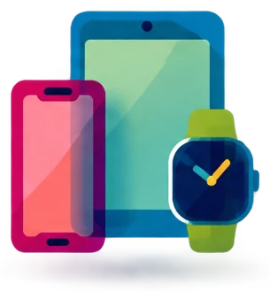
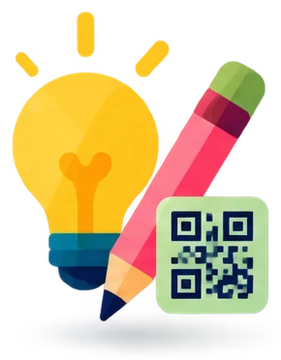
5.1
En el examen: 3 preguntas. Aquí practicas con una pregunta del estilo de la demo, un reto y una simulación.
5.1 · Problemas técnicos
Muchos fallos se arreglan con estos pasos. Hazlos en orden.
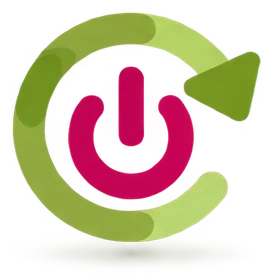
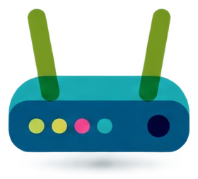
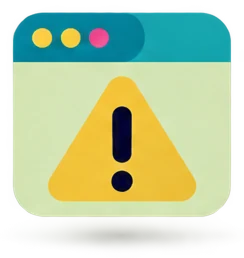
5.1 · Problemas técnicos
El servicio técnico (también soporte técnico o asistencia técnica) es el servicio que repara aparatos y resuelve problemas de uso.
Tienes tres opciones:
Es del fabricante o está autorizado por él.
Conoce el aparato y usa piezas originales. Atiende la garantía.
Tramita la garantía.
Lleva la factura o el ticket de compra.
Puede ser más barato.
Si abre el aparato durante la garantía, puedes perderla.
5.1 · Problemas técnicos
La garantía es el tiempo en que el vendedor tiene que arreglar o cambiar gratis un producto que falla.
En España es de 3 años para los productos nuevos comprados desde el 1 de enero de 2022. Antes eran 2 años.
Guarda la factura o el ticket.
5.1 · Problemas técnicos
| Dato | Dónde lo encuentras |
|---|---|
| Marca y modelo «Lenovo IdeaPad 3» | Etiqueta de debajo del portátil o de detrás de la torre, caja o factura. Móvil: Ajustes › Acerca del teléfono. Windows 11: Configuración › Sistema › Información. |
| Número de serie (S/N) o IMEI | Etiqueta o caja. Móvil: Ajustes › Acerca del teléfono, o marca *#06# para ver el IMEI (tema 4). |
| Sistema y versión «Windows 11», «Android 16» | Configuración › Sistema › Información. Móvil: Ajustes › Acerca del teléfono › Información de software. |
| Fecha de compra | Factura, ticket o pedido online. Sirve para la garantía. |
El número de serie es el código que identifica a un aparato concreto. No hay dos iguales.
Etiqueta de una marca inventada.
5.1 · Problemas técnicos
| Dato | Ejemplo | Cómo lo consigues |
|---|---|---|
| Qué pasa y desde cuándo | «La pantalla se queda negra al encender, desde ayer». | Fíjate bien y apúntalo. |
| Mensaje de error exacto | «No se encuentra MSVCP140.dll». | Haz una captura (Windows + Mayús + S) o una foto con el móvil. |
| Qué has probado | «He reiniciado y he probado otro enchufe». | Los pasos de «Antes de pedir ayuda». |
5.1 · Problemas técnicos
Allí están el servicio técnico oficial y el manual de usuario. La caja suele traer solo una guía rápida.
HP DeskJet 2720e manual.5.1 · Problemas técnicos
Un controlador (o driver) es el programa que permite al ordenador usar un aparato, como una impresora.
Ficha de soporte de una impresora. Kalimpra es una marca inventada.
5.1 · Práctica (no cuenta para el Comprueba)
5.1 · Problemas técnicos
| Dónde | Cómo lo usas |
|---|---|
| Buscador (Google, Bing) | Copia el mensaje de error exacto entre comillas y añade el sistema o el modelo. Las comillas buscan la frase exacta. |
| Ayuda oficial | Guías paso a paso del fabricante: support.microsoft.com, support.google.com, support.apple.com. |
| Foro | Un foro es una web donde los usuarios preguntan y otros responden. Ejemplos: Comunidad de Microsoft, foros del fabricante, Reddit. Mira si hay una respuesta marcada como solución y su fecha. |
| Vídeo tutorial (YouTube) | Busca «cómo + tarea + modelo». Ejemplo: «cómo hacer una captura de pantalla Samsung Galaxy A55». Mira la fecha y los comentarios. |
| Tutorial escrito o blog | Explica los pasos con capturas de pantalla. |
5.1 · Problemas técnicos
Un asistente de IA (inteligencia artificial) es un programa que entiende lo que escribes y te responde. Ejemplos: ChatGPT, Microsoft Copilot y Google Gemini.
Cómo preguntar: describe el aparato, el sistema, el mensaje exacto y lo que has probado. Pide los pasos. La IA puede equivocarse: compruébalo.
Para preguntas rápidas, usa un asistente de voz: Gemini (antes, Asistente de Google) o Siri.
5.1 · Problemas técnicos · ya lo sabes
También con Windows + I. Sus apartados:
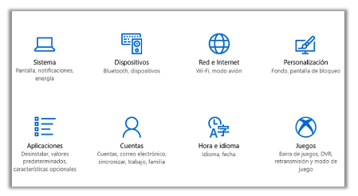
5.1 · Problemas técnicos · ya lo sabes
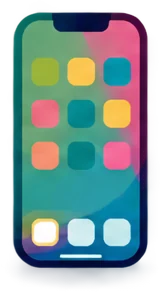
Wifi, Bluetooth, brillo, sonido, idioma y modo avión.
La lupa de Ajustes busca cualquier ajuste. Escribe, por ejemplo, «brillo».
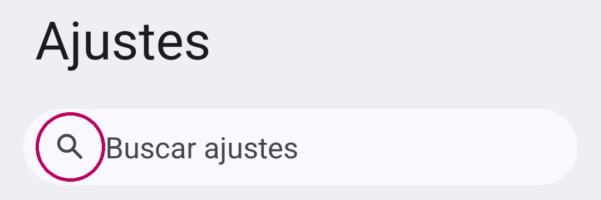
Busca la rueda dentada ⚙, el menú ⋮ o tu foto de perfil. Dentro está Ajustes o Configuración.
5.1 · Así lo pregunta el examen · pregunta del estilo de la demo
5.1 · Problemas técnicos
5.2
En el examen: 3 preguntas. En la demo: ver un vídeo del móvil en la tele y emparejar programas de pago con programas libres.
5.2 · Necesidades y respuestas tecnológicas · ya lo sabes
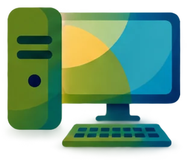
Torre y monitor. Es potente, pero no se mueve.
Todo en uno, con batería. Lo llevas a clase.
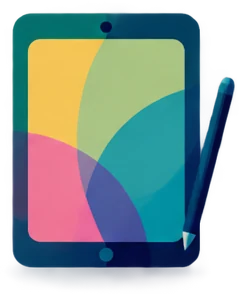
Pantalla táctil grande. Para ver vídeos, leer o dibujar con un lápiz.
Teléfono inteligente: llamadas, mensajes, cámara, aplicaciones e Internet.
Pasa un archivo a papel. De tinta o láser. La multifunción imprime, escanea y copia.
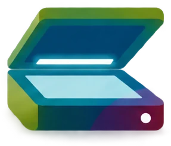
Pasa un papel a un archivo (PDF o imagen). También con el móvil: Google Drive › Escanear.
Su pantalla de tinta electrónica no cansa la vista y gasta muy poca batería. Ejemplos: Kindle de Amazon y Kobo. Los libros suelen estar en formato EPUB.
5.2 · Necesidades y respuestas tecnológicas
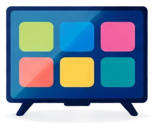
Una smart TV (televisión inteligente) es una tele que se conecta a Internet, por wifi o por cable.
Tiene aplicaciones: YouTube, Netflix, RTVE Play.
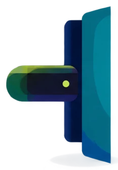
Es un aparato pequeño que se enchufa a la tele. Convierte una tele normal en inteligente.
Ejemplos: Amazon Fire TV Stick, Xiaomi TV Stick, Google TV Streamer. Google dejó de fabricar el Chromecast en 2024.
La Internet TV es ver la tele y vídeos por Internet, en directo o a la carta. Se ve en la tele, el móvil o el ordenador.
Es streaming (retransmisión por Internet). Con datos móviles, gasta muchos GB de tu tarifa.
5.2 · Necesidades y respuestas tecnológicas
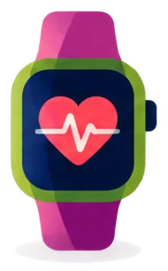
Un smartwatch (reloj inteligente) es un reloj con pantalla táctil que se conecta al móvil por Bluetooth.
Avisos, llamadas, pasos, pulso, sueño, GPS y pago con NFC.
Ejemplos: Apple Watch (el temario dice «iWatch», pero Apple nunca ha usado ese nombre) y Samsung Galaxy Watch. La pulsera de actividad es más sencilla.
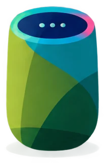
Es un altavoz con asistente de voz. Responde, pone música y controla aparatos de casa.
Ejemplos: Amazon Echo (Alexa) y Google Nest.
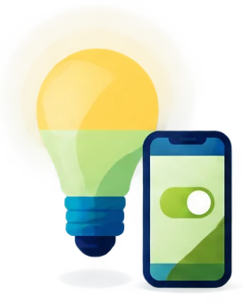
El Internet de las cosas (IoT) son objetos normales conectados a Internet y manejados con el móvil.
Ejemplos: bombillas, enchufes, robots aspiradores y cámaras.
5.2 · Necesidades y respuestas tecnológicas
| Necesidad | Dispositivo | Por qué |
|---|---|---|
| Leer muchos libros | Ebook | Tinta electrónica. La batería dura semanas. |
| Hacer trabajos con Word y llevarlos al instituto | Portátil | Teclado, programas completos y batería. |
| Ver series en un viaje | Tableta | Pantalla grande y poco peso. |
| Contar los pasos y medir el pulso al correr | Smartwatch o pulsera | Lo llevas puesto y mide mientras corres. |
| Ver YouTube en la pantalla grande del salón | Smart TV o stick HDMI | Tiene las aplicaciones en la tele. |
| Imprimir desde el salón con la impresora en otra habitación | Impresora wifi | Se conecta sin cables. |
| Enviar un papel firmado sin tener escáner | App del móvil para escanear | Google Drive › Escanear. |
| Editar vídeo y jugar | Sobremesa potente | Más potencia y una pantalla grande. |
5.2 · Necesidades y respuestas tecnológicas
La wifi es una conexión a Internet sin cables a través de un router: en casa, en el instituto o en la biblioteca.
Los datos móviles son la conexión a Internet que te da tu compañía de teléfono a través de sus antenas.
5.2 · Necesidades y respuestas tecnológicas
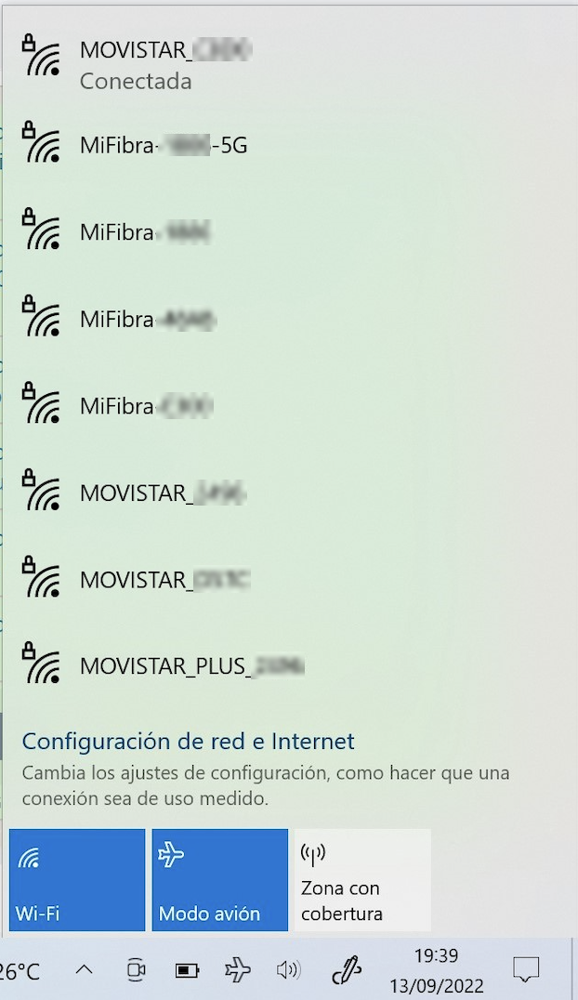
5.2 · Necesidades y respuestas tecnológicas
La G significa «generación». Son las conexiones de datos de tu compañía de teléfono, de la más antigua a la más rápida.
Llamadas y SMS. Con GPRS (también 2,5G) llegaron los primeros datos, muy lentos: correo y mensajes.
Internet en el móvil: navegar y las primeras videollamadas.
Rápido: vídeo en alta calidad, redes sociales y videollamadas.
Mucho más rápido y con muy poca latencia: coches conectados e Internet de las cosas.
La latencia es el tiempo que tarda la red en responder.
5.2 · Necesidades y respuestas tecnológicas
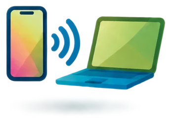
Tienes que enviar un archivo urgente desde el portátil. ¿Qué haces?
Usa el móvil como router y comparte sus datos con el portátil. Se llama punto de acceso, zona wifi portátil o conexión compartida.
Android: Ajustes › Redes e Internet › Compartir Internet › Punto de acceso wifi. En Samsung: Ajustes › Conexiones › Zona Wi-Fi Móvil y Módem. Ahí ves el nombre de la red y la contraseña.
iPhone: Ajustes › Punto de acceso personal › Permitir a otros conectarse.
En el portátil, conéctate a esa red wifi con su contraseña. Gasta los datos del móvil.
5.2 · Necesidades y respuestas tecnológicas
| Tarea | Tipo de aplicación | Ejemplos |
|---|---|---|
| Escribir un texto o un trabajo | Procesador de textos | Word, LibreOffice Writer, Documentos de Google |
| Cálculos, presupuestos, listas con números y gráficos | Hoja de cálculo | Excel, LibreOffice Calc, Hojas de cálculo de Google |
| Una exposición en clase | Presentaciones | PowerPoint, LibreOffice Impress, Presentaciones de Google, Canva |
| Apuntar algo rápido en el móvil | Notas | Google Keep, Notas (iPhone), Samsung Notes |
| Una encuesta a cientos de personas | Formularios | Google Forms (Formularios de Google; la demo dice «Google Form») y Microsoft Forms |
| Retocar una foto | Editor de imágenes | GIMP, Photoshop, Snapseed |
5.2 · Necesidades y respuestas tecnológicas
| Tarea | Tipo de aplicación | Ejemplos |
|---|---|---|
| Hablar y verse a distancia | Videollamadas | Google Meet, Microsoft Teams, Zoom, WhatsApp |
| Traducir un texto, un cartel o una conversación | Traductor | Google Traductor: con la cámara, en modo conversación o con la voz |
| Escanear un papel | Escáner del móvil | Google Drive › Escanear |
| Enviar un archivo demasiado grande para el correo | Envío de archivos | Un enlace de Google Drive u OneDrive. WeTransfer: gratis hasta 3 GB por envío (el manual de CyL Digital dice 2 GB: el límite ha cambiado). |
| Cambiar el formato de un archivo (un vídeo a GIF, un PDF a ebook) | Convertidor online | CloudConvert |
| Organizar las tareas de un grupo | Tablero de tareas | Trello (lo viste en el tema 2) |
5.2 · Necesidades y respuestas tecnológicas
El software libre es el que se puede usar, estudiar, modificar y compartir. Muchos programas libres son gratuitos.
Writer, Calc e Impress son partes de LibreOffice.
| De pago | Libre y gratuito |
|---|---|
| Microsoft Word | LibreOffice Writer |
| Microsoft Excel | LibreOffice Calc |
| Microsoft PowerPoint | LibreOffice Impress |
| Adobe Photoshop | GIMP |
| Windows | Linux (por ejemplo, Ubuntu) |
| Adobe Illustrator | Inkscape |
| Adobe Premiere Pro | Kdenlive o Shotcut |
| Outlook de Microsoft 365 | Mozilla Thunderbird |
5.2 · Práctica · pregunta 18 de la demo
Pregunta 18 de la demo de tuCertiCyL (Junta de Castilla y León).
5.2 · Necesidades y respuestas tecnológicas
Hay tres formas.
USB-C - HDMI: móviles con salida de vídeo por USB-C. MicroUSB - HDMI: móviles antiguos compatibles con MHL («enlace móvil de alta definición»). Mira en el manual si tu móvil lo admite.
Enchufa el cable en una entrada HDMI de la tele. Elige esa entrada con el botón Source o Input del mando.
Google TV Streamer (o Chromecast) o Amazon Fire TV Stick. El stick se enchufa en una entrada HDMI de la tele.
El móvil y el stick tienen que estar en la misma wifi. En YouTube o Netflix, pulsa Enviar: el icono de una pantalla con ondas.
En el panel rápido del móvil, pulsa Enviar o Duplicar pantalla. En Samsung se llama Smart View.
iPhone: Duplicar pantalla con AirPlay, en teles compatibles. También puedes pulsar Enviar dentro de la app.
5.2 · Necesidades y respuestas tecnológicas
Imagen y sonido digitales. El de las teles actuales.
ActualMóviles actuales. Se enchufa por los dos lados.
ActualMóviles antiguos. Solo entra en una posición.
AntiguoAzul, 15 pines. Vídeo analógico de monitores antiguos, sin sonido.
AntiguoTambién SCART. Ancho y analógico. De las teles antiguas.
Antiguo5.2 · Así lo pregunta el examen · pregunta 17 de la demo
Pregunta 17 de la demo de tuCertiCyL (Junta de Castilla y León).
5.2 · Necesidades y respuestas tecnológicas
5.3
En el examen: 3 preguntas. En la demo: qué aplicación usar para una encuesta a cientos de personas.
5.3 · Soluciones creativas · ya lo sabes
| Idea | En el ordenador | En el móvil o en la web |
|---|---|---|
| Dibujar y pintar | Paint, Krita (libre) | — |
| Retocar fotos | GIMP, Photoshop | Snapseed, editor de Google Fotos |
| Diseñar carteles, infografías y publicaciones | Canva (en la web) | App de Canva. Tiene plantillas gratis y de pago. Descargas en PNG, JPG o PDF. |
| Grabar y editar vídeo | Clipchamp (viene con Windows 11), Shotcut, OpenShot | CapCut |
| Grabar y editar audio o un pódcast | Audacity (libre) | Grabadora del móvil |
| Componer música | MuseScore (partituras, libre) | GarageBand (iPhone y Mac), BandLab |
5.3 · Soluciones creativas · ya lo sabes
| Idea | En el ordenador | En el móvil o en la web |
|---|---|---|
| Calcular | Calculadora de Windows, Excel o Calc | Calculadora del móvil |
| Escribir | Word, Writer | Documentos de Google |
| Hacer una encuesta y recoger las respuestas | — | Google Forms, Microsoft Forms |
| Programar | Scratch | Scratch en la web |
En Word, PowerPoint y Excel. En LibreOffice: Insertar › Forma.
5.3 · Soluciones creativas
SmartArt es una herramienta de Microsoft Office que convierte una lista de ideas en un esquema con formas y flechas. Está en Word, PowerPoint, Excel y Outlook.
Pasos en orden. Ejemplo: cómo pedir una beca.
Algo que se repite. Ejemplo: el reciclaje.
Quién depende de quién. Ejemplo: el organigrama del instituto.
Otras categorías: Lista (ideas sin orden), Relación, Matriz, Pirámide e Imagen.
5.3 · Soluciones creativas
Es texto decorado: con relleno, borde o sombra. No hace esquemas.
Es una figura suelta: un círculo, una flecha o una estrella.
Muestra datos numéricos en barras o sectores. Se hace con números.
5.3 · Soluciones creativas
Word de Microsoft 365: ventana «Elegir un gráfico SmartArt».
5.3 · Soluciones creativas
SmartArt «Proceso básico» recién insertado, con su panel de texto.
5.3 · Soluciones creativas
Un código QR es un código de barras cuadrado que guarda información y se lee con la cámara del móvil.
QR viene del inglés Quick Response, «respuesta rápida». Es la evolución del código de barras y guarda más datos.
Qué puede guardar: una dirección web, la contraseña de la wifi, un contacto, un texto, una ubicación o un pago.
Dónde lo ves: en cartas de restaurantes, entradas, billetes de tren o de avión y folletos. También sirve para vincular WhatsApp Web o para compartir la wifi del móvil.
Este QR lleva a tucerticyl.es.
Pruébalo con la cámara del móvil.
5.3 · Soluciones creativas
LEERLO
También lo lee Google Lens.
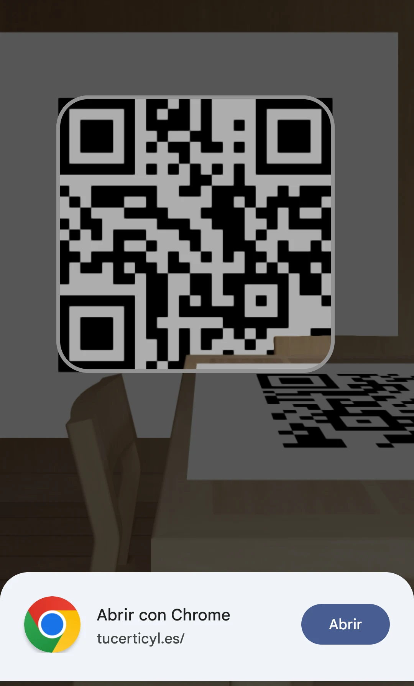
CREARLO
Con un generador web, como Unitag. O con Chrome, para la página que estás viendo:
5.3 · Soluciones creativas
Un QR puede llevar a una web falsa. Esta estafa se llama quishing: phishing (tema 4) con códigos QR.
Ejemplos: una pegatina falsa encima del QR de un parquímetro o de un cartel. Una carta o un correo con un QR para «verificar tu cuenta».
5.3 · Soluciones creativas
Un dron es una aeronave sin piloto a bordo. Se maneja a distancia con un mando o con el móvil.
Usos: fotos y vídeos aéreos, agricultura, rescates, revisar tejados y torres eléctricas.
Normas: en España los regula AESA (Agencia Estatal de Seguridad Aérea). No se vuela sobre grupos de personas ni cerca de aeropuertos. Para volar muchos drones, tienes que registrarte como operador en AESA.
Una impresora 3D fabrica un objeto sólido capa a capa a partir de un diseño en 3D del ordenador.
Normalmente usa plástico fundido, que se llama filamento.
Usos: piezas de repuesto, prototipos, prótesis y maquetas.
5.3 · Soluciones creativas
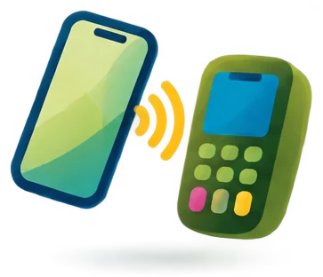
El NFC (comunicación de campo cercano) permite pagar acercando el móvil o el reloj al datáfono.
Apps: Google Wallet y Apple Pay.
Usa unas gafas que muestran un mundo en 3D a tu alrededor. Ejemplo: Meta Quest.
El metaverso usa esta tecnología.
Ya los has visto en la 5.2.
El temario dice «iWatch»: es el Apple Watch. La Internet TV es ver la tele por Internet (streaming).
5.3 · Así lo pregunta el examen · pregunta 19 de la demo
Pregunta 19 de la demo de tuCertiCyL (Junta de Castilla y León).
5.3 · Soluciones creativas
5.4
En el examen: 3 preguntas. En la demo: cómo son los cursos MOOC.
5.4 · Necesidades de competencias digitales
5.4 · Necesidades de competencias digitales
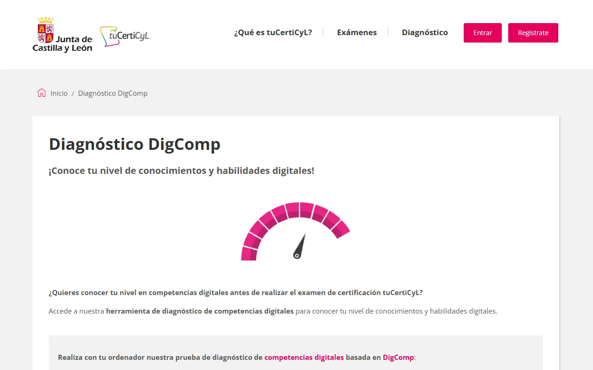
5.4 · Necesidades de competencias digitales
Un curso online es un curso que se hace por Internet, en una plataforma con vídeos, textos, ejercicios y foros. También se llama formación online o e-learning.
5.4 · Necesidades de competencias digitales
Un webinar (seminario web) es una charla en directo por Internet con un experto.
Puedes preguntar por el chat o con el micrófono.
Vídeos cortos que enseñan una tarea paso a paso.
Por ejemplo, en YouTube.
Webs con muchos cursos online:
Udemy, Aula Fácil, Google Actívate y CyL Digital.
5.4 · Necesidades de competencias digitales
MOOC son las siglas en inglés de Massive Open Online Course: curso online masivo y abierto.
Sin límite de alumnos: sin límite de inscripciones.
Gratis y para cualquier persona.
Por Internet y a tu ritmo.
Muchos MOOC dan un certificado al aprobar. A veces el certificado se paga aparte.
5.4 · Necesidades de competencias digitales
| Si la opción dice… | No es un MOOC porque… |
|---|---|
| «por videoconferencias en directo» | Eso es un webinar. |
| «de pago» | Un MOOC es abierto: gratis. |
| «para pequeños grupos» | Un MOOC es masivo: sin límite de alumnos. |
5.4 · Necesidades de competencias digitales
CyL Digital es el programa de la Junta de Castilla y León para formar a la ciudadanía en tecnologías digitales. Su web es cyldigital.es.
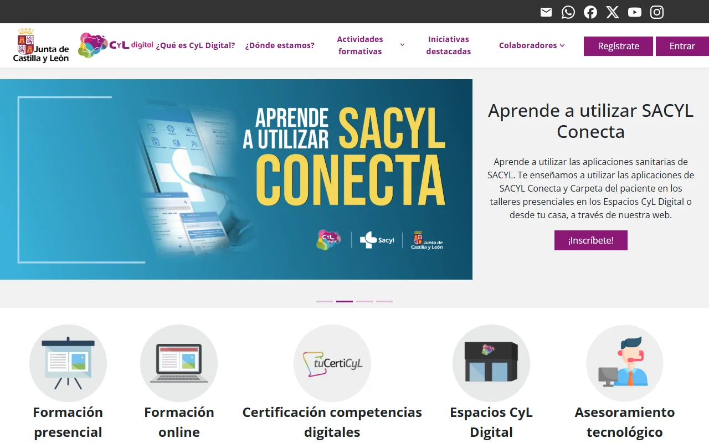
5.4 · Así lo pregunta el examen · pregunta 20 de la demo
Pregunta 20 de la demo de tuCertiCyL (Junta de Castilla y León).
5.4 · Necesidades de competencias digitales
Repaso del área 5
Repaso del área 5 · preguntas del curso «Soy competente digital», CyL Digital
Fin del tema 5
Problemas técnicos
Necesidades y respuestas tecnológicas
Soluciones creativas
Necesidades de competencias digitales
Has terminado las 5 áreas. Siguiente paso: el simulacro, con la demo oficial de 20 preguntas y un simulacro de 63 preguntas, como el examen. Si te falta alguna competencia, vuelve a su Comprueba.
Basado en el curso «Soy competente digital», de CyL Digital (Junta de Castilla y León), CC BY-NC. Preguntas 17 a 20 de la demo de tuCertiCyL. Curso: CC BY-NC-SA 4.0.